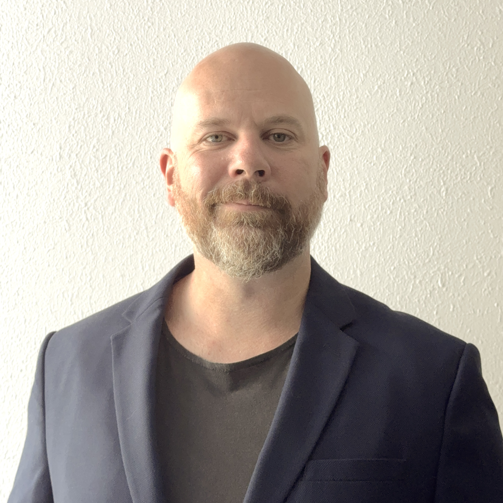

Hi, I’m Chris, but you can call me Appsy! I’m from the Gold Coast, where I work remotely as a Training Operations Manager and Instructional Designer for an RTO.
When I’m not busy shaping the future of education, you’ll find me jamming on my guitar or producing music in my studio. I’m here to explore a side gig that might just lead to an exciting career change.
And here’s a fun fact about me: despite all my adventures, I’ve never broken a bone! I’m working from my trusty Mac and ready to bring my talents to the next level.

Chris Apps
I have a strong background in training operations, project management, and instructional design. Over the years, I’ve honed my skills in leading teams, managing accredited programs, and implementing innovative learning solutions. I excel at driving organisational success through strategic planning and effective collaboration across departments. My expertise spans compliance, end-to-end learning design, and integrating technology and AI into training programs, all aimed at boosting operational efficiency and enhancing student satisfaction. Whether I’m pioneering new systems or optimising existing processes, I’m committed to delivering high-impact results that elevate both teams and organisations.
- Training Operations Manager (Oct 2023 - Present)
- Massage Training Manager (Nov 2022 - Oct 2023)
- Program Coordinator (May 2021 - Nov 2022)
- Master Coach (Apr 2019 - May 2021)
- Trainer and Assessor (Jul 2015 - Apr 2019)
- Personal Trainer & Remedial Therapist (Aug 2014 - May 2021)
- Logistics Coordinator (Aug 2013 - Jan 2015)
- Procurement Officer (Nov 2008 - Aug 2013)
- Aircraft Technician (Jun 2002 - Jun 2008)